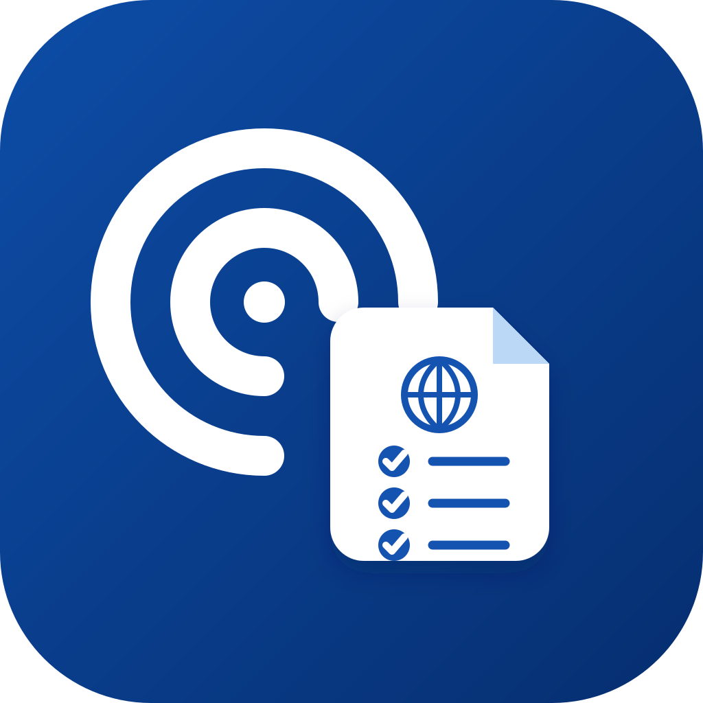

WAYmark
Single iteration based on the supplied direction: information signal + personal document checklist. Text and watermark removed; icon rebalanced for standalone use.

主视觉：政策/信息更新与材料清单的结合
64px 尺寸测试
Single iteration based on the supplied direction: information signal + personal document checklist. Text and watermark removed; icon rebalanced for standalone use.
